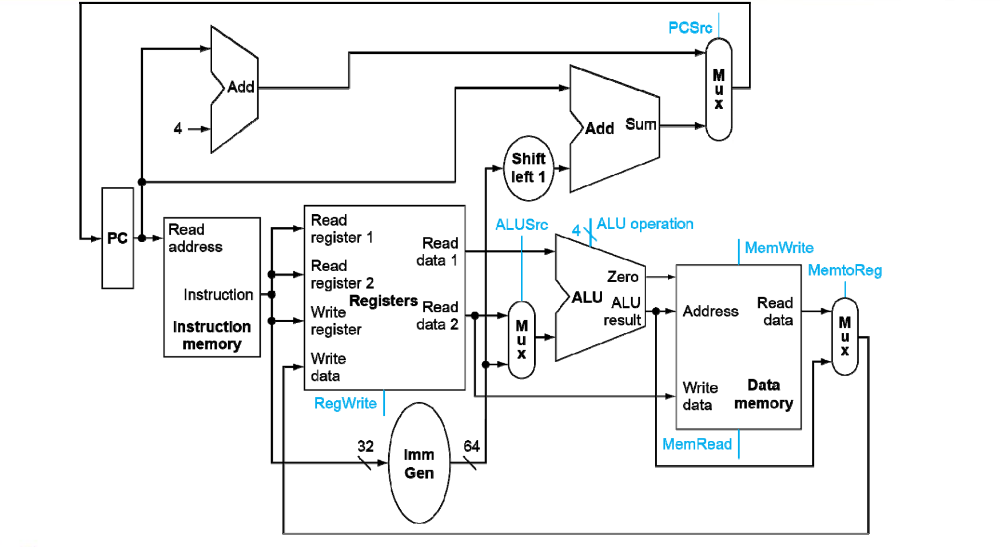

Chapter 4
Introduction
影响 CPU 表现的因素：
- Instruction count: ISA 和 编译器决定
- CPI 和时钟周期长度: 硬件决定
我们需要实现两种版本 CPU：单周期和流水线
指令的大类：
- Memory reference: ld, sd
- Arithmetic/logical: add, sub, and, or, slt
- Control transfer: beq，jal
所有指令都有的两步：内存取指，译码读寄存器
CPU 中的重要模块：ALU、Memery（指令只读，数据可读写）、Regfile、立即数产生器

组成的 CPU 大致如下：

多路信号的地方都需要多路选择器
多路选择器需要控制信号
都加入完善后得到下面的 CPU
Building a datapath
Datapath：Elements that process data and addresses in the CPU
- RISC-V 指令集：
寄存器和内存：
- 32 个寄存器，x0 恒等于 0
- \(2^{61}\) memory words，一个 word 4 个 byte（可以访问 Mem[0]、Mem[8] ··· Mem[18446744073709551608]）

执行指令的步骤：
- Fetch
- Instruction decoding & Read Operand
- Executive Control
- Memory access
- Write results to register
- Modify PC (branch)
完整的数据通路（注意 imm 出去后的 shift left 1 是因为 SB 型指令不存立即数的最后一位，以便获得更大的跳转范围）

Control Unit

需要参照的指令部分（蓝色）
可以多层解码生成 ALU 控制信号（这样在开始时可以只传 ins[6:0]）
此时的 Decoder：
或者一层用case语句test
Performence（cycle time）取决于最慢的指令，一些部件在某些指令没有用到
提升：流水线
Exception
- CPU 内部的中断信号（同步）—— Exception
- CPU 外部（异步）—— Interuption

处理中断信号：
- 保存 CPU 状态
- 保存被打断的信号的 PC，In RISC-V 保存在 Supervisor Exception Program Counter（mEPC）
- 保存问题的说明，In RISC-V 保存在 Supervisor Exception Cause Register (mCAUSE)
-
处理异常：跳转到 mtvec 寄存器提供的地址解决问题
- 读取 mCAUSE，并转至相关处理程序
- 确定需要进行的操作
- 可行的话处理完毕后回归
- 不行的话终止程序，报告 SEPC、SCAUSE
-
回到正常流程（In RISC-V 机器模式，使用MRET退出指令，返回到SEPC存储的pc地址开始执行）
根据以上流程，我们需要：
- Transfer control to exception handler & return from exception
- Control status registers
- CSR instructions
RISC-V 的权限模式（机器模式权限最高且必须提供）
在机器模式（M 模式）下运行的代码通常本质上是可信的，因为它对机器实现具有低级访问权限。
M 模式可用于管理 RISC-V 上的安全执行环境。

实现多个权限 mode 更加安全
Control and Status Registers (CSRs)
- additional set of registers，可以被 CSR 指令访问（某些模式）
- CSR 指令分为： atomically read-modify-write CSR 和所有其他特权指令
指令格式：
- 12 位可访问 4096 个 CSRs
- 前两位：读写模式选择
-
接下来两位：模式（机器模式、用户模式等）
-
中断中使用的 MSRs：
-
mstatus(0x300)
Machine STATUS register：主要用于保证当前特权模式下中断处理程序的原子性。
 * mie/mip(0x304/344)
* mie/mip(0x304/344)Machine Interrupt Enable register: 控制能否响应中断
- MEIE、SEIE and UEIE enable external interrupt
- MSIE、SSIE & USIE enable software interrupts
- MTIE、STIE and UTIE enable timer interrupts
Machine interrupt-pending register
-
mtvec
Machine Trap-Vector Base-Address Register：包含 vector base address 和 vector mode

BASE 字段中的值必须始终在 4 字节边界上对齐，并且 MODE 设置可能会对 BASE 字段中的值施加额外的对齐约束。
* mepc
Machine Exception Program Counter: 记录回来的地址（最后两位为 0，因为地址是 4 的倍数）

Exception：mepc = PC
Interruption： mepc = PC + 4
-
mcause
第一位是 1 - 中断，0 - 异常

-
流水线
每个阶段之间加一个缓冲器，记录所需的所有信息
Hazard——冒险
- Structure hazard: 竞争硬件资源
- 将指令和 data memory 分开
- 备份硬件
- 先读后写的约束
- 不管（概率小）
- Data hazard: 需要等待前一条指令执行完
解决方法一：停顿两个周期（效率低）

解决方法二：前递

但一些时候不能直接前递，必须 bubble
forwarding 条件判断：
- 当前指令 rs1 == 上一指令 rd?
- 上一指令 RegWrite == 1?
- rd != 0
数据通路：
如果多个 buffer 里都有当前指令的 rs1/rs2，优先最新的 buffer
if (MEM/WB.RegWrite and (MEM/WB.RegisterRd ≠ 0)
and not (EX/MEM.RegWrite and (EX/MEM.RegisterRd ≠ 0)
and (EX/MEM.RegisterRd = ID/EX.RegisterRs1))
and (MEM/WB.RegisterRd = ID/EX.RegisterRs1))
orwardA = 01
if (MEM/WB.RegWrite and (MEM/WB.RegisterRd ≠ 0)
and not (EX/MEM.RegWrite and (EX/MEM.RegisterRd ≠ 0)
and (EX/MEM.RegisterRd = ID/EX.RegisterRs2))
and (MEM/WB.RegisterRd = ID/EX.RegisterRs2))
ForwardB = 01
- Control Hazard: Control 信号的产生依赖前一条指令
Example: branch 指令